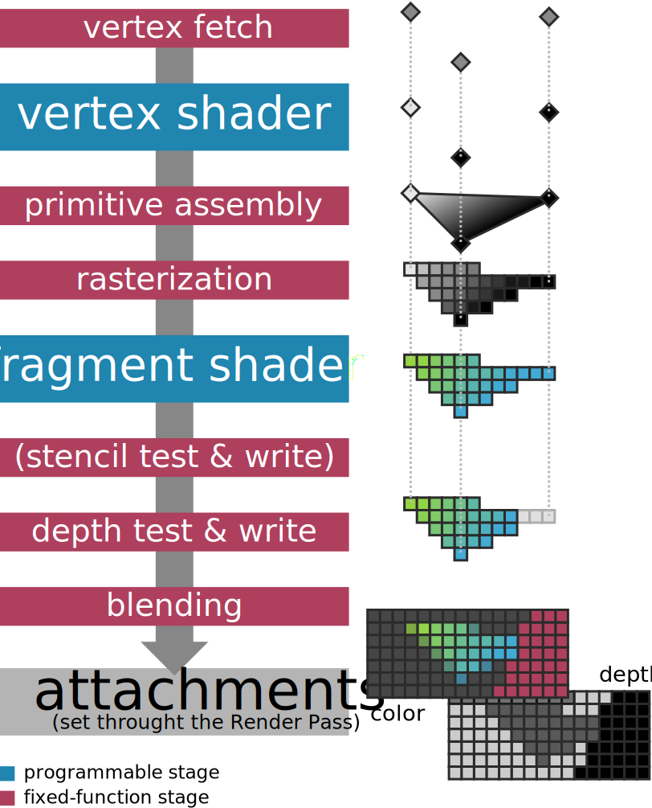
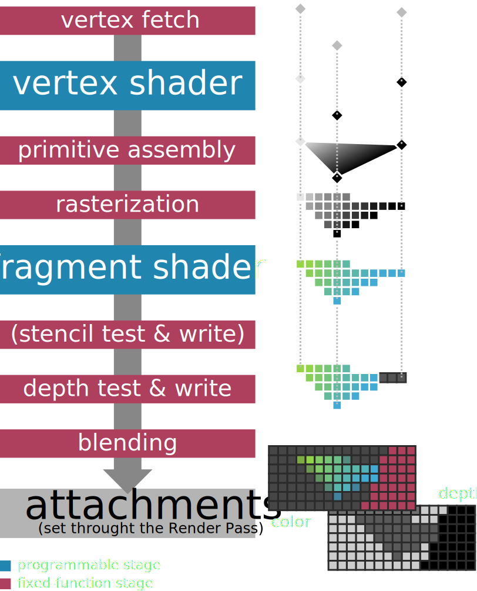

Hello Triangle#
Resulting code: step030
Resulting code: step030-vanilla
In its overall outline, drawing a triangle is as simple as this:
// Select which render pipeline to use
renderPass.setPipeline(pipeline);
// Draw 1 instance of a 3-vertices shape
renderPass.draw(3, 1, 0, 0);
// Select which render pipeline to use
wgpuRenderPassEncoderSetPipeline(renderPass, pipeline);
// Draw 1 instance of a 3-vertices shape
wgpuRenderPassEncoderDraw(renderPass, 3, 1, 0, 0);
What is a bit verbose is the configuration of the render pipeline, and the creation of shaders. This is done only once when initializing the application.
Render Pipeline#
In order to achieve high performance real-time 3D rendering, the GPU processes shapes through a predefined pipeline. The pipeline itself is always the same (it is generally burnt into the physical architecture of the hardware), but we can configure it in many ways. To do so, WebGPU provides a Render Pipeline object.
Note
If you are familiar with OpenGL, you can see WebGPU’s render pipeline as a memorized value for all the stateful functions that configure the rendering pipeline.
The figure below illustrates the sequence of data processing stages executed by the render pipeline. Most of them are fixed-function stages, for which we can only customize some variables, but the most powerful ones are the programmable stages.
In these programmable stages, a true program, called a shader, is executed in a massively parallel way (across input vertices, or across rasterized fragments).
The Render Pipeline abstraction used by WebGPU, detailed in subsections below.
Note
Other graphics APIs provide access to more programmable stages (geometry shader, mesh shader, task shader). These are not part of the Web standard. They might be available in the future as native-only extensions, but in a lot of cases one can use general purpose compute shaders to mimic their behavior.
As always, we build a descriptor in order to create the render pipeline:
RenderPipelineDescriptor pipelineDesc;
// [...] Describe render pipeline
RenderPipeline pipeline = device.createRenderPipeline(pipelineDesc);
WGPURenderPipelineDescriptor pipelineDesc{};
pipelineDesc.nextInChain = nullptr;
// [...] Describe render pipeline
WGPURenderPipeline pipeline = wgpuDeviceCreateRenderPipeline(device, &pipelineDesc);
We now detail the configuration of the different stages. We start with a very minimal setup where we leave a lot of features unused, they will be introduce progressively in the next chapters.
Vertex pipeline state#
Both the vertex fetch and vertex shader stages are configured through the vertex state structure, accessible at pipelineDesc.vertex.
The render pipeline first fetches vertex attributes from some buffers. This includes usually at least a position, and might include additional per-vertex information like color, normal, texture coordinate, etc. In this first example, we hard-code the position of the 3 vertices of the triangles in shaders so we do not even need a position buffer.
pipelineDesc.vertex.bufferCount = 0;
pipelineDesc.vertex.buffers = nullptr;
Then each vertex is processed by a custom vertex shader. A shader is the combination of:
A shader module, which contains the actual code of the shader.
An entry point, which is the name of the function in the shader module that must be called for each vertex. This enables a given shader module to include entry points for multiple render pipeline configurations at the same time. In particular, we use the same module for the vertex and fragment shaders.
An array of value assignments for the constants of the shader. We do not use any for now.
pipelineDesc.vertex.module = shaderModule;
pipelineDesc.vertex.entryPoint = "vs_main";
pipelineDesc.vertex.constantCount = 0;
pipelineDesc.vertex.constants = nullptr;
The shaderModule will be defined in the next section.
Primitive pipeline state#
The primitive state structure found at pipelineDesc.primitive configures the primitive assembly and rasterization stages.
The rasterization is the very heart of the 3D rendering algorithm implemented by a GPU. It transforms a primitive (a point, a line or a triangle) into a series of fragments, that correspond to the pixels covered by the primitive. It interpolates any extra attribute output by the vertex shader, such that each fragment receives a value for all attributes.
The primitive assembly configuration consists in stating how the array of vertices fetched earlier must be connected to for either a point cloud, a wire frame or a triangle soup. We set it to its default configuration:
// Each sequence of 3 vertices is considered as a triangle
pipelineDesc.primitive.topology = PrimitiveTopology::TriangleList;
// We'll see later how to specify the order in which vertices should be
// connected. When not specified, vertices are considered sequentially.
pipelineDesc.primitive.stripIndexFormat = IndexFormat::Undefined;
// The face orientation is defined by assuming that when looking
// from the front of the face, its corner vertices are enumerated
// in the counter-clockwise (CCW) order.
pipelineDesc.primitive.frontFace = FrontFace::CCW;
// But the face orientation does not matter much because we do not
// cull (i.e. "hide") the faces pointing away from us (which is often
// used for optimization).
pipelineDesc.primitive.cullMode = CullMode::None;
// Each sequence of 3 vertices is considered as a triangle
pipelineDesc.primitive.topology = WGPUPrimitiveTopology_TriangleList;
// We'll see later how to specify the order in which vertices should be
// connected. When not specified, vertices are considered sequentially.
pipelineDesc.primitive.stripIndexFormat = WGPUIndexFormat_Undefined;
// The face orientation is defined by assuming that when looking
// from the front of the face, its corner vertices are enumerated
// in the counter-clockwise (CCW) order.
pipelineDesc.primitive.frontFace = WGPUFrontFace_CCW;
// But the face orientation does not matter much because we do not
// cull (i.e. "hide") the faces pointing away from us (which is often
// used for optimization).
pipelineDesc.primitive.cullMode = WGPUCullMode_None;
Note
Usually we set the cull mode to Front to avoid wasting resources in rendering the inside of objects. But for beginners it can be very frustrating to see nothing on screen for hours only to discover that the triangle was just facing in the wrong direction, so I advise you to set it to None when developing.
Fragment shader#
Once a primitive have been turned into fragments, the fragment shader stage is invoked for each one of them. This shader receives the interpolated values generated by the vertex shader, and must output on its turn the final color of the fragment.
Note
Keep in mind that all these stages are happening in a very parallel and asynchronous environment. When rendering a large mesh, the fragment shader for the first primitives may be invoked before the last primitives have been rasterized.
The configuration is very similar to the configuration of the vertex shader:
FragmentState fragmentState;
fragmentState.module = shaderModule;
fragmentState.entryPoint = "fs_main";
fragmentState.constantCount = 0;
fragmentState.constants = nullptr;
// [...] We'll configure the blend stage here
pipelineDesc.fragment = &fragmentState;
WGPUFragmentState fragmentState{};
fragmentState.module = shaderModule;
fragmentState.entryPoint = "fs_main";
fragmentState.constantCount = 0;
fragmentState.constants = nullptr;
// [...] We'll configure the blend stage here
pipelineDesc.fragment = &fragmentState;
Note that the fragment stage is optional, so pipelineDesc.fragment is a (potentially null) pointer instead of directly holding the fragment state structure.
Stencil/Depth state#
The depth test is used to discard fragments that are behind other fragments associated to the same pixel. Remember that a fragment is the projection of a given primitive on a given pixel, so when primitives overlap each others, multiple fragments are emitted for the same pixel. Fragments have a depth information, which is used by the depth test.
The stencil test is another fragment discarding mechanism, used to hide fragments based on previously rendered primitives. Let’s ignore the depth and stencil mechanism for now, we will introduce them in the Depth buffer chapter.
pipelineDesc.depthStencil = nullptr;
Blending#
The blending stage takes each fragment’s color and “paints” it onto the target color attachment. If the original color in the destination pixel is \((r_d, g_d, b_d, a_d)\) and the color of the source fragment to paint is \((r_s, g_s, b_s, a_s)\), what should be the final color \((r, g, b, a)\) of the final pixel? This is what the blend state specifies.
We must also specify what format (i.e., how to represent the values as zeros and ones) the colors are to be stored in the final attachment.
BlendState blendState;
// [...] Configure blend state
ColorTargetState colorTarget;
colorTarget.format = swapChainFormat;
colorTarget.blend = &blendState;
colorTarget.writeMask = ColorWriteMask::All; // We could write to only some of the color channels.
// We have only one target because our render pass has only one output color
// attachment.
fragmentState.targetCount = 1;
fragmentState.targets = &colorTarget;
WGPUBlendState blendState{};
// [...] Configure blend state
WGPUColorTargetState colorTarget{};
colorTarget.format = swapChainFormat;
colorTarget.blend = &blendState;
colorTarget.writeMask = WGPUColorWriteMask_All; // We could write to only some of the color channels.
// We have only one target because our render pass has only one output color
// attachment.
fragmentState.targetCount = 1;
fragmentState.targets = &colorTarget;
The blending equation can be set independently for the rgb channels and the alpha channel, in general, it takes the following form:
The usual alpha blending equation is configured as \(rgb = a_s \times rgb_s + (1 - a_s) \times rgb_d\)
blendState.color.srcFactor = BlendFactor::SrcAlpha;
blendState.color.dstFactor = BlendFactor::OneMinusSrcAlpha;
blendState.color.operation = BlendOperation::Add;
blendState.color.srcFactor = WGPUBlendFactor_SrcAlpha;
blendState.color.dstFactor = WGPUBlendFactor_OneMinusSrcAlpha;
blendState.color.operation = WGPUBlendOperation_Add;
And similarly for the alpha channel:
For instance we can leave the target alpha untouched: \(a = a_d = 0 \times a_s + 1 \times a_d\)
blendState.alpha.srcFactor = BlendFactor::Zero;
blendState.alpha.dstFactor = BlendFactor::One;
blendState.alpha.operation = BlendOperation::Add;
blendState.alpha.srcFactor = WGPUBlendFactor_Zero;
blendState.alpha.dstFactor = WGPUBlendFactor_One;
blendState.alpha.operation = WGPUBlendOperation_Add;
Multi-sampling#
I said previously that a fragment is the portion of a primitive that is projected onto a specific pixel. Actually, we can split pixels into sub-elements, called samples, and the fragment is associated to a sample. The value of a pixel is computed by averaging its associated samples.
This mechanism is called multi-sampling and is used for anti-aliasing, but we’ll leave it off for now by setting the number of sample per pixel to 1.
// Samples per pixel
pipelineDesc.multisample.count = 1;
// Default value for the mask, meaning "all bits on"
pipelineDesc.multisample.mask = ~0u;
// Default value as well (irrelevant for count = 1 anyways)
pipelineDesc.multisample.alphaToCoverageEnabled = false;
Shaders#
Both the vertex and fragment programmable stages use the same shader module, that we must first create. This module is a kind of dynamic library, like a .dll, .so or .dylib file, except that it talks the binary language of your GPU rather than your CPU’s.
Like any compiled program, the shader is first written in a human-writable programming language, then compiled into low-level machine code. However, the low-level code is highly hardware-dependent, and often not publicly documented. So the application is distributed with the source code of the shaders, which is compiled on the fly when initializing the application.
Shader code#
The shader language officially used by WebGPU is called WGSL, namely the WebGPU Shading Language. Any implementation of WebGPU must support it, and the JavaScript version of the API only supports WGSL, but the native header webgpu.h also offers the possibility to provide shaders written in SPIR-V or GLSL (wgpu-native only).
Tip
SPIR-V is more of an intermediate representation, a bytecode, than something that one would write manually. It is the shader language used by the Vulkan API and a lot of tools exist to cross-compile code from other common shader languages (HLSL, GLSL) so it is an interesting choice when one needs to reuse existing shader code bases.
Note
Also note that WGSL has been designed to be a human-editable version of SPIR-V programming model, so transpilation from SPIR-V to WGSL is efficient and lossless (use Naga or Tint for this).
In this documentation we mostly use WGSL. Its syntax may seem a bit unfamiliar if you are used to C/C++ so let us start with a very simple function and its equivalent in C++:
// In WGSL
fn my_addition(x: f32, y: f32) -> f32 {
let z = x + y;
return z;
}
// In C++
float my_addition(float x, float y) {
auto z = x + y;
return z;
}
Notice how the types are specified after instead of before the argument names. The type of z is automatically inferred, though we could have forced it using let z: f32 = .... The return type is specified after the arguments, using the arrow ->.
Note
The keyword let defines a constant, i.e., a variable that cannot be reassigned. A regular variable is defined using the var keyword.
Now here is the shader for our triangle:
@vertex
fn vs_main(@builtin(vertex_index) in_vertex_index: u32) -> @builtin(position) vec4f {
var p = vec2f(0.0, 0.0);
if (in_vertex_index == 0u) {
p = vec2f(-0.5, -0.5);
} else if (in_vertex_index == 1u) {
p = vec2f(0.5, -0.5);
} else {
p = vec2f(0.0, 0.5);
}
return vec4f(p, 0.0, 1.0);
}
@fragment
fn fs_main() -> @location(0) vec4f {
return vec4f(0.0, 0.4, 1.0, 1.0);
}
The function names vs_main (resp. fs_main) must have the very same name as what was specified as entryPoint in the vertex (resp. fragment) state.
Note
Shader languages natively support vector and matrix types up to size 4. The type vec2f is a vector of 2 floats, and an alias for the templated type vec2<f32>. As another example, the type vec4<u32> is a vector of 4 unsigned integers and has alias vec4u.
Tokens that start with an @ are called attributes and decorate the object that comes afterward with various information. For instance, @builtin(vertex_index) tells that the argument in_vertex_index, which could have any name, will be populated by the built-in input vertex attribute that is the vertex index. We use it to set the output value of the shader, which is labelled with @builtin(position) as something that must be interpreted by the rasterizer as the vertex position.
For more flexibility, the shader code should be loaded from a file, but for now we simply store it in a multi-line string literal in our main.cpp:
const char* shaderSource = R"(
[...] The WGSL shader source code
)";
Creation of a shader module#
The creation of the shader module starts as usual:
ShaderModuleDescriptor shaderDesc;
// [...] Describe shader module
ShaderModule shaderModule = device.createShaderModule(shaderDesc);
WGPUShaderModuleDescriptor shaderDesc{};
// [...] Describe shader module
WGPUShaderModule shaderModule = wgpuDeviceCreateShaderModule(device, &shaderDesc);
At first glance, this descriptor seems to have only an array of compilation “hints” to fill, which we leave empty (and even nothing at all when using Dawn):
#ifdef WEBGPU_BACKEND_WGPU
shaderDesc.hintCount = 0;
shaderDesc.hints = nullptr;
#endif
But this time, we do not set nextInChain to nullptr!
The nextInChain pointer is the entry point of WebGPU’s extension mechanism. It is either null, or pointing to a structure of type WGPUChainedStruct. This structure is very simple. First it may recursively have a next element (again, either null or pointing to some WGPUChainedStruct). Second, it has a struct type sType, which is an enum telling in which struct the chain element can be cast. Each struct whose definition starts with a field WGPUChainedStruct chain has an associated SType.
To create a shader module from WGSL code, we use the ShaderModuleWGSLDescriptor SType. A SPIR-V shader can similarly be created using the WGPUShaderModuleSPIRVDescriptor.
The field shaderCodeDesc.chain corresponds to the chained struct when cast as a simple WGPUChainedStruct, which must be set to the corresponding SType enum value:
ShaderModuleWGSLDescriptor shaderCodeDesc;
// Set the chained struct's header
shaderCodeDesc.chain.next = nullptr;
shaderCodeDesc.chain.sType = SType::ShaderModuleWGSLDescriptor;
// Connect the chain
shaderDesc.nextInChain = &shaderCodeDesc.chain;
WGPUShaderModuleWGSLDescriptor shaderCodeDesc{};
// Set the chained struct's header
shaderCodeDesc.chain.next = nullptr;
shaderCodeDesc.chain.sType = WGPUSType_ShaderModuleWGSLDescriptor;
// Connect the chain
shaderDesc.nextInChain = &shaderCodeDesc.chain;
Finally we can setup the actual payload of the shader code descriptor:
shaderCodeDesc.code = shaderSource;
Dawn
The Dawn implementation of WebGPU does not fully handle this pipeline. First, it does not include the hints/hintCount in the shader module descriptor. Secondly, it renamed shaderCodeDesc.code into shaderCodeDesc.source.
Pipeline layout#
One last thing before we can run our code: the shaders might need to access input and output resources (buffers and/or textures). These resources are made available to the pipeline by configuring a memory layout. Our first example does not use any resource:
pipelineDesc.layout = nullptr;
Note
Actually, setting the pipeline layout to nullptr does not mean that there is no input/output resources. It rather asks the backend to figure out the layout by itself by inspecting the shader (which in this very case is equivalent).
Conclusion#
This chapter introduced the core skeleton for rendering triangle-based shapes on the GPU. For now these are 2D graphics, but once everything will be in place, switching to 3D will be straightforward. We have seen two very important concepts:
The render pipeline, which is based on the way the hardware actually works, with some parts fixed, for the sake of efficiency, and some parts are programmable.
The shaders, which are the GPU-side programs driving the programmable stages of the pipeline.
Our first triangle rendered using WebGPU.#
Dawn
When using Dawn, you may see different colors, because the target surface use a different color space. More on this later on.
What’s next?#
The key algorithms and techniques of computer graphics used for 3D rendering are for a large part implemented in the shaders code. What we still miss at this point though is ways to communicate between the C++ code (CPU) and the shaders (GPU).
The next two chapters focus on two ways to feed input to this render pipeline: vertex attributes, where there is one value per vertex, and uniforms, which define variable that are common to all vertices and fragments for a given call.
We then take a break away from pipeline things with the switch to 3D meshes, which is in the end less about code and more about math. We also introduce a bit of interaction with a basic camera controller. We then introduce a 3rd way to provide input resource, namely textures, and how to map them onto meshes.
Storage textures, which are used the other way around, to get data out of the render pipeline, will be presented only in advanced chapters. Instead, the last chapter of this section is fully dedicated to the computer graphics matter of lighting and material modeling.
Resulting code: step030
Resulting code: step030-vanilla